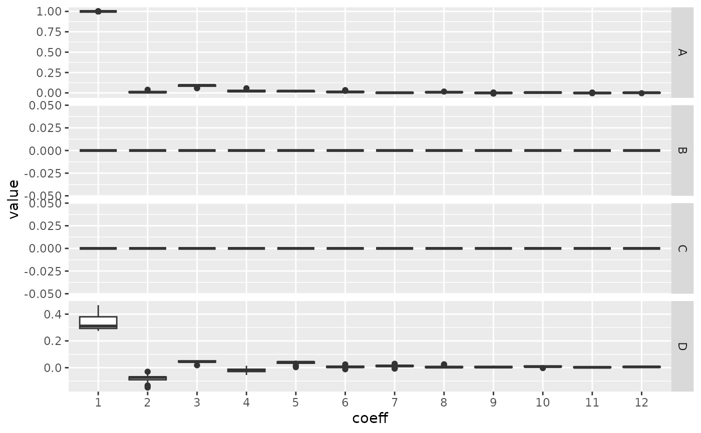
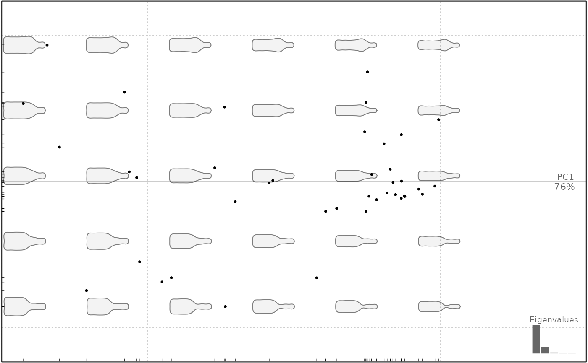
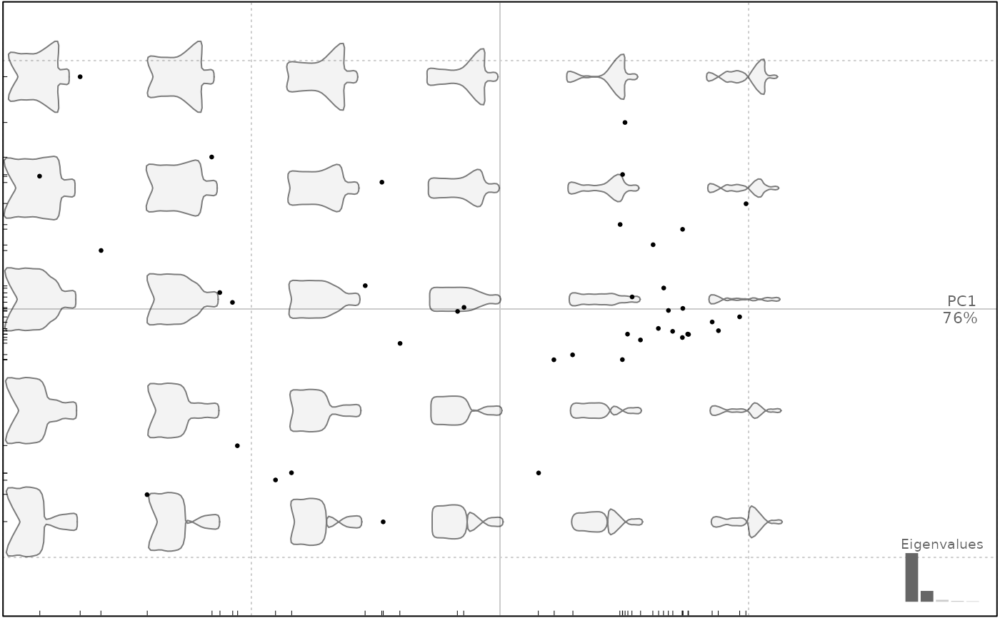
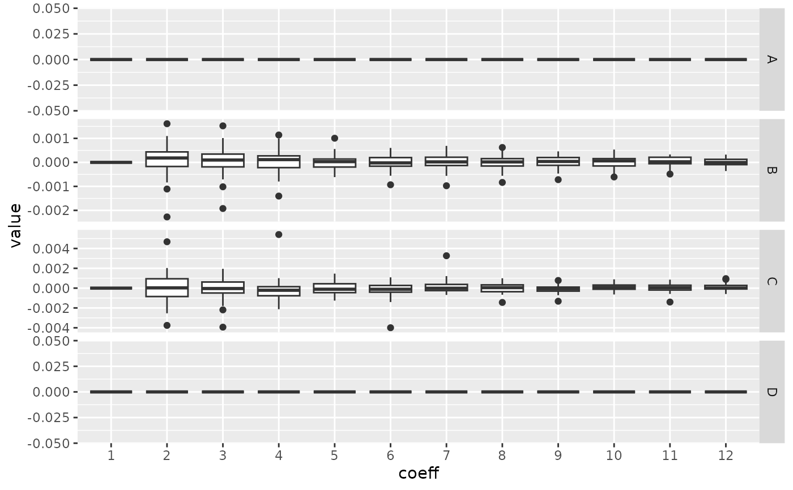
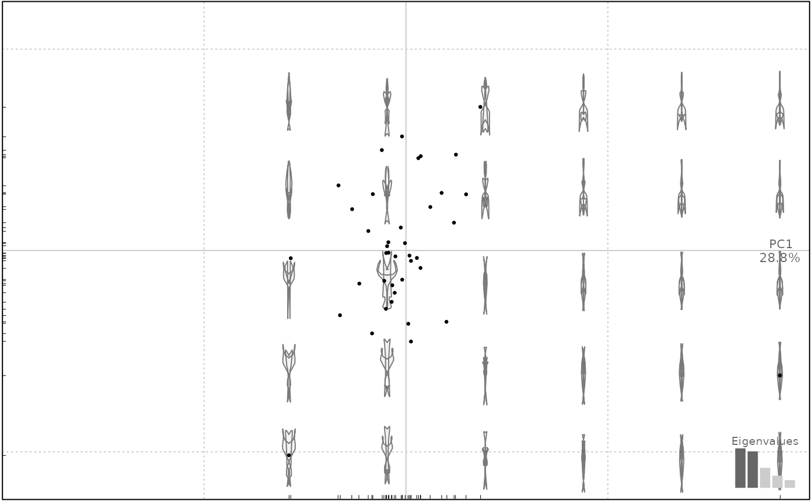

Only for those obtained with efourier, otherwise a message is returned.
rm_asym sets all B and C coefficients to 0; rm_sym sets
all A and D coefficients to 0.
Usage
rm_asym(OutCoe)
# Default S3 method
rm_asym(OutCoe)
# S3 method for class 'OutCoe'
rm_asym(OutCoe)
rm_sym(OutCoe)
# Default S3 method
rm_sym(OutCoe)
# S3 method for class 'OutCoe'
rm_sym(OutCoe)References
Below: the first mention, and two applications.
Iwata, H., Niikura, S., Matsuura, S., Takano, Y., & Ukai, Y. (1998). Evaluation of variation of root shape of Japanese radish (Raphanus sativus L.) based on image analysis using elliptic Fourier descriptors. Euphytica, 102, 143-149.
Iwata, H., Nesumi, H., Ninomiya, S., Takano, Y., & Ukai, Y. (2002). The Evaluation of Genotype x Environment Interactions of Citrus Leaf Morphology Using Image Analysis and Elliptic Fourier Descriptors. Breeding Science, 52(2), 89-94. doi:10.1270/jsbbs.52.89
Yoshioka, Y., Iwata, H., Ohsawa, R., & Ninomiya, S. (2004). Analysis of petal shape variation of Primula sieboldii by elliptic fourier descriptors and principal component analysis. Annals of Botany, 94(5), 657-64. doi:10.1093/aob/mch190
See also
symmetry and the note there.
Examples
botf <- efourier(bot, 12)
#> 'norm=TRUE' is used and this may be troublesome. See ?efourier #Details
botSym <- rm_asym(botf)
boxplot(botSym)

botSymp <- PCA(botSym)
plot(botSymp)
#> will be deprecated soon, see ?plot_PCA

plot(botSymp, amp.shp=5)
#> will be deprecated soon, see ?plot_PCA

# Asymmetric only
botAsym <- rm_sym(botf)
boxplot(botAsym)

botAsymp <- PCA(botAsym)
plot(botAsymp)
#> will be deprecated soon, see ?plot_PCA

# strange shapes because the original shape was mainly symmetric and would need its
# symmetric (eg its average) for a proper reconstruction. Should only be used like that:
plot(botAsymp, morpho=FALSE)
#> will be deprecated soon, see ?plot_PCA